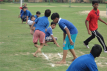

<HTML>
<HEAD>
 <link href="main page.css" rel="stylesheet" >
 <style>body {background-image:url("Background.jpg");
              padding:0;
              margin:0;}</style>
 </HEAD>
<TITLE>MY SCHOOL </TITLE>
<div id=container><BODY  ></BODY></HTML>
<HTML>
<BODY><TABLE border="5px" bgcolor=white STYLE="POSITION:ABSOLUTE;TOP:20%;left:0%" WIDTH=100%>
<TR>
<TD><font color="DARK yellow"><center><A HREF="my first html.html" COLOR=WHITE>HOME</A></center></font></TD>
<TD><font color="DARK yellow"><center><A HREF="ABOUT.HTML">ABOUT US</A></center></font></TD>
<td><font color="DARK yellow"><center><A HREF="ADMISSION.HTML">ADMISSION</A></center></font></TD>
<TD><font color="DARK yellow"><center><A HREF="facilities1.html">FACILITIES</a></center></font></TD>
<TD><font color="DARK yellow"><center><A HREF="school library.html">SCHOOL LIBRARY</a></center></font></TD>
<TD><font color="DARK yellow"><center><A HREF="activity centre.html">ACTIVITY CENTER</a></center></font></TD>
<TD><font color="DARK yellow"><center><A HREF="STUDENT PARENT PORTAL.HTML">STUDENT & PARENT PORTAL</A></center></font></TD>
<TD><font color="DARK yellow"><center><A HREF="infrastructure.html">INFRASTRUCTURE</a></center></font></TD>

</TR></TABLE>
</BODY></HTML>
<html>
<body><B><FONT COLOR=RED SIZE="5PX"><SPAN STYLE="POSITION:ABSOLUTE;TOP:25%;LEFT:4%"/>IT CENTER</B>
<hr width="70%"STYLE="POSITION:ABSOLUTE;TOP:27%"><a href="message from patron.html"></a>

<FONT COLOR=white SIZE="2PX"><span style="position:absolute;top:30%;left:15%"/>
The School's IT Centre comprises separate computer laboratories for junior and senior classes.<br>
 This Centre provides invaluable skills and knowledge essential for students to grasp the<br>
 nuances of Information Technology. It ensures that our students are well equipped with<br>
 Technological knowledge and induces them to be at their creative best. The Senior Computer<br> 
 Laboratory is also equipped for high speed internet connection, thus permitting high-quality<br>
 Internet surfing experience under supervision.<br><br> 

Computer Science is compulsory from Classes I to X. It is offered as an elective subject at +2<br>
 stages. The IT Centre gives priceless experience to students in structured methods of<br>
 instruction/learning and provides the best of software available in the very competitive world<br>
 we live in. The I.T. Centre also houses the School servers and is actively used to maintain<br>
 students' academic and co-curricular records and all other facets of school administration,<br>
 which is largely automated. It also comprises a Teacher Resource centre with Desktop<br>
 computers, to empower teachers and to help them prepare for their classes better.</font>
 <B><FONT COLOR=RED SIZE="5PX"><SPAN STYLE="POSITION:ABSOLUTE;TOP:70%;LEFT:4%"/>SPORTING ARENA</B>
<hr width="70%"STYLE="POSITION:ABSOLUTE;TOP:74%">

<FONT COLOR=white SIZE="2PX"><span style="position:absolute;top:80%;left:15%"/>
Indirapuram Public School is synonymous with the term holistic development. The school<br>
 emphasizes on a balanced all round development of our children. Sports occupies a pride of<br>
 place in our school curriculum. Apart from the regular activities pertaining to Physical<br>
 Training that are incorporated into the time table, proficiency in games like Table Tennis<br>
 , Basket Ball, Cricket and Kho-Kho are also encouraged.<br><br> 
The Indirapuram School Sports Academy includes coaching in Cricket, Football, Basketball<br>
 , Taekwondo, Table Tennis, Skating and Swimming.</font>
 <B><FONT COLOR=RED SIZE="5PX"><SPAN STYLE="POSITION:ABSOLUTE;TOP:100%;LEFT:4%"/>SWIMMING POOL</B>
<hr width="70%"STYLE="POSITION:ABSOLUTE;TOP:104%">

<FONT COLOR=white SIZE="2PX"><span style="position:absolute;top:110%;left:15%"/>
Our school has an excellent swimming pool which is functional during the warmer months of<br>
the year i.e. generally from April to October. Each student is imparted lessons in swimming<br>
during games period. Those wanting to excel can also opt for specialized coaching in<br>
 swimming with the Sports academy in the evenings.
 </font>
 <B><FONT COLOR=RED SIZE="5PX"><SPAN STYLE="POSITION:ABSOLUTE;TOP:135%;LEFT:4%"/>SCHOOL INFIRMARY</B>
<hr width="70%"STYLE="POSITION:ABSOLUTE;TOP:139%">

<FONT COLOR=blue SIZE="2PX"><span style="position:absolute;top:145%;left:15%"/>
The school infirmary is fully equipped with medical facilities to handle day to day<br>
emergencies and provide First Aid to any student when the need arises. Regular health<br>
 checkups are done by qualified doctors duly assisted by competent Nurses. Overall health<br>
 check-ups are performed twice a year for each student.</font>
 <B><FONT COLOR=RED SIZE="5PX"><SPAN STYLE="POSITION:ABSOLUTE;TOP:170%;LEFT:4%"/>SCHOOL TRANSPORT</B>
<hr width="70%"STYLE="POSITION:ABSOLUTE;TOP:174%">

<FONT COLOR=white SIZE="2PX"><span style="position:absolute;top:180%;left:15%"/>
The school boasts of a fleet of well maintained buses covering various locations in Noida<br>
, Crossings Republik, Indirapuram, Vaishali and Vasundhara. Every bus is equipped with support<br>
 staff and telecom facility ensuring easy monitoring of each route.</font> 
 
 </html></body>
 html>

<body> <table bgcolor="red" style="position:absolute;top:210%;left:0%" width="100%" height="10%">
<tr><td><font size="2px" color="white">Phone: 0120-2840031, 2741466<br>
Admission Counsellor: 09560994650 <br>
E-Mail	: indirapuramps.pv@gmail.com, principal.indirapuramps.pv@gmail.com<br></font>
<SPAN STYLE="POSITION:ABSOLUTE;TOP:45%;LEFT:70%"/><A HREF="my first html.html"><FONT SIZE="2PX" COLOR="WHITE">HOME</font></A>|<A HREF="ABOUT.html"><FONT COLOR=WHITE size=2px>ABOUT US</FONT></A>|<A HREF="contactus.html"><FONT SIZE="2PX" COLOR="WHITE">CONTACT US</font></A>               
</table></div></body></html>
 